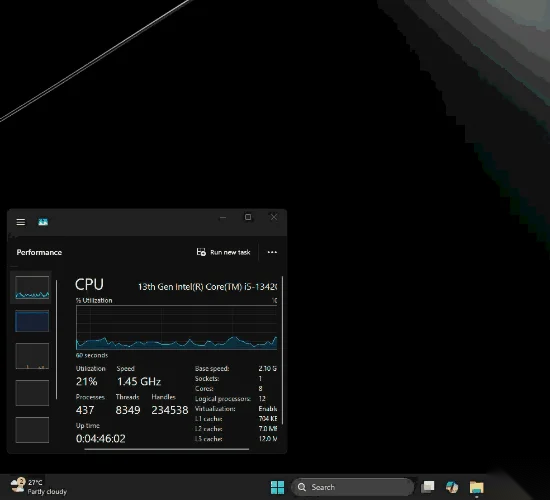

6月12日，微软正式向 Windows 11 用户推送了 2026 年 6 月累积更新 KB5094126。其中，Windows 11 25H2 版本升级至 Build 26200.8655，24H2 版本升级至 Build 26100.8655。

不过，相比一长串修复列表，这次更新真正引发用户关注的，是微软悄悄上线的一项性能优化功能——低延迟配置文件（Low Latency Profile）。简单来说，它能让 Windows 的操作响应速度明显提升，尤其是在打开开始菜单、搜索框、通知中心以及各种应用程序时，系统会显得更加“跟手”。

什么是低延迟配置文件？
你可以把它理解成微软给 CPU 打上的一针“鸡血”。
当你点击开始菜单、搜索框、任务栏图标或者启动某个应用时，Windows 会立刻将 CPU 频率拉升到最高状态，并持续约 1～3 秒。利用这段短暂的性能爆发时间，系统能够更快完成界面渲染和响应操作。
等任务处理完成后，CPU 又会迅速恢复到正常功耗状态，因此不会长期占用性能，也不会明显增加发热和耗电。

为什么它能让电脑感觉更流畅？
在过去的 Windows 调度机制中，CPU 并不会立刻进入满血状态，而是采用渐进式提频策略。这意味着当你点击某个按钮后，处理器需要先完成频率爬升，再开始处理界面渲染任务。对于旗舰级处理器来说，这个过程可能只有几毫秒，用户几乎感觉不到。
但对于入门级电脑、轻薄本以及服役多年的老机器来说，这种延迟就会被放大，表现出来就是：
- 点击开始菜单要等一下；
- 打开搜索框会有短暂卡顿；
- 启动软件时界面出现明显迟疑；
- 整个系统总感觉慢半拍、不够跟手。

而低延迟配置文件的作用，就是让 CPU 在用户操作发生的瞬间直接进入高性能状态，把这段等待时间压缩到最低。
对于预算级电脑和老旧设备来说，这项优化带来的提升尤为明显，甚至会让人产生一种“电脑突然变快了”的直观感受。

如何检查你的电脑是否已经开启“CPU鸡血模式”？
需要特别注意的是，即便你已经安装了微软最新推送的 6 月累积更新，也不代表低延迟配置文件已经立即生效。因为微软采用的是 CFR（Controlled Feature Rollout，受控功能推送） 机制，也就是俗称的“灰度发布”。系统会分批向用户开放新功能，以便观察稳定性和兼容性情况。
换句话说：
- 同样安装了最新补丁；
- 同样是 Windows 11；
- 同样的系统版本；
你的电脑可能已经开启了这项优化，而别人的电脑却还没有收到推送。
更关键的是，微软并没有提供任何开关选项，也不会弹出提示通知用户。整个过程都在后台静默完成，因此很多用户甚至不知道自己的系统已经获得了这项性能升级。
那么问题来了：
如何判断你的电脑是否已经开启了这个“CPU加速模式”？
由于 Windows 任务管理器刷新频率较低，无法准确捕捉仅持续 1～3 秒的频率峰值，因此我们需要借助专业硬件监测工具进行验证。
检测方法
第一步：确认系统版本
按下 Win + R，输入：
winver
查看系统版本是否已经升级到：
- Windows 11 25H2（Build 26200.8655）或更高版本
- Windows 11 24H2（Build 26100.8655）或更高版本
如果版本号低于上述版本，需要先安装最新的 Windows 更新。
第二步：安装监测工具
下载并安装 HWiNFO 硬件监测工具。这是目前最常用的硬件状态监测软件之一，可以实时查看 CPU 频率、功耗和温度变化。
HWiNFO 工具下载：【点击前往】 或 【备用下载】

第三步：打开实时监控
启动 HWiNFO 后：
- 选择 Sensors Only（仅传感器模式）
- 保持传感器窗口处于可见状态
- 找到 CPU Core Clock（核心频率）相关项目

第四步：触发系统交互
接下来连续执行以下操作：
- 按一下 Windows 键打开开始菜单
- 点击任务栏搜索框
- 打开快速设置或操作中心
- 启动文件资源管理器
这些都是微软低延迟配置文件重点优化的交互场景。
第五步：观察频率变化
如果在你点击的瞬间：
- CPU频率突然飙升至最大睿频；
- 持续约 1～3 秒；
- 随后迅速恢复正常频率；
那么恭喜你，微软的低延迟配置文件已经成功推送到你的设备。
简单来说，你的 Windows 11 已经进入了所谓的“CPU鸡血模式”。
虽然这种性能爆发只持续短短几秒钟，但对于开始菜单、搜索框、文件管理器等高频操作来说，却能显著降低响应延迟，让系统整体使用体验更加流畅、跟手。

当然如果你没收到更新，那么可以直接微软官网，下载最新 Windows 11 系统安装包，进行手动更新也可以
Windows 11 最新系统安装包下载：【点击前往】 或 【备用下载】